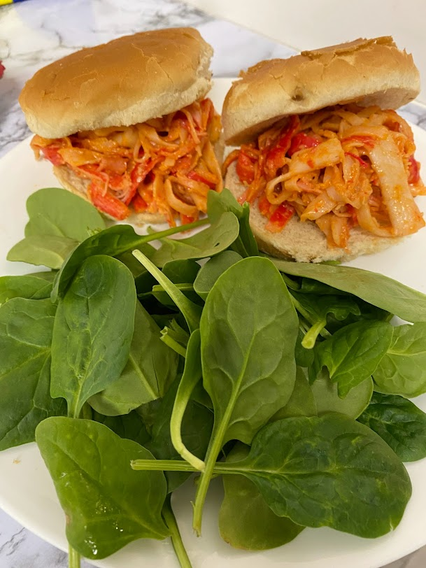

Click the images below to check out my ★★★★★ recipes!

A Spaghetti Burrito is an interesting conversation starter

Noodles and protein are essential to living

Sriracha and Mayo go well with Fish Tacos

Not sponsored by McDonald's

Hotdog bun with expired guacamole

Don't forget to mix Sriracha and Mayo together!

Air fryers and a package of cleaned Raw Spinach are great for the soul